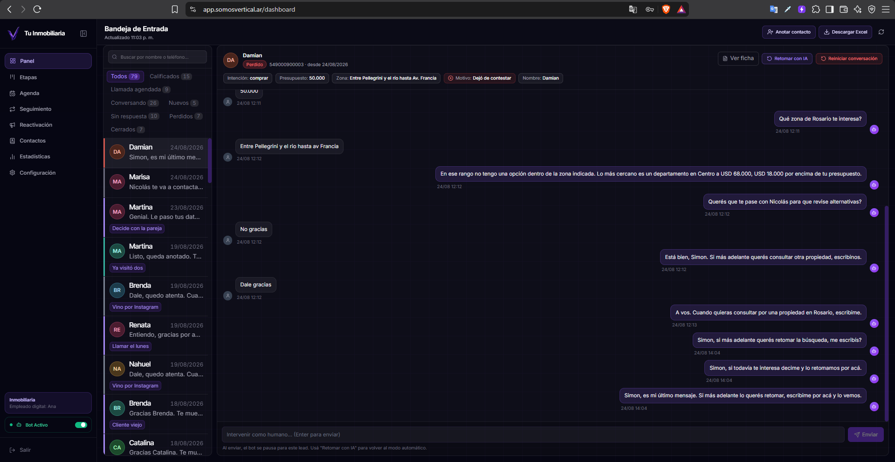
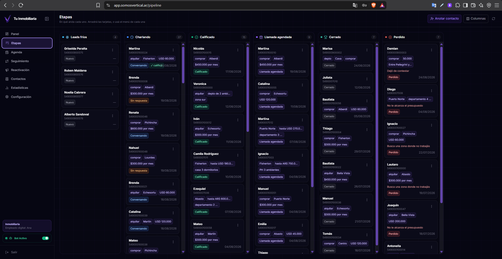
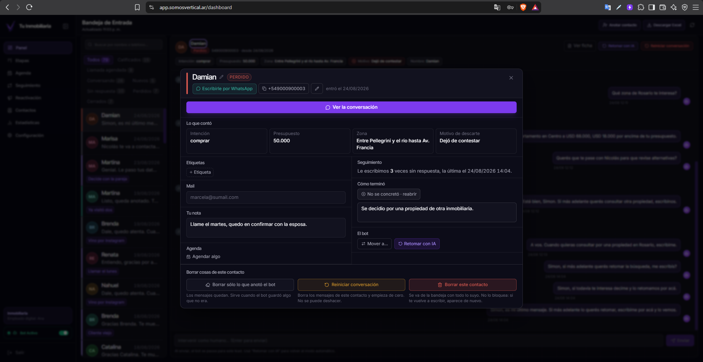
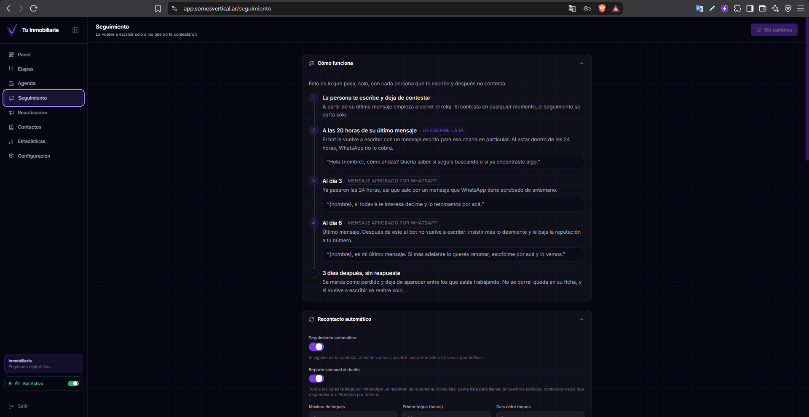
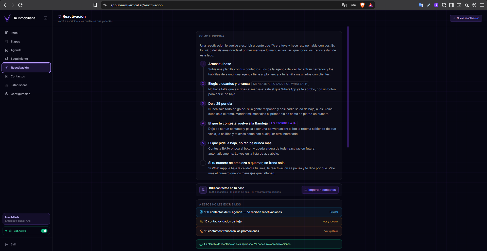
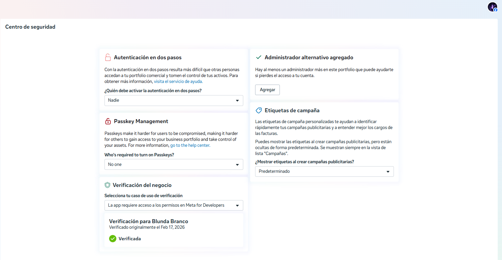
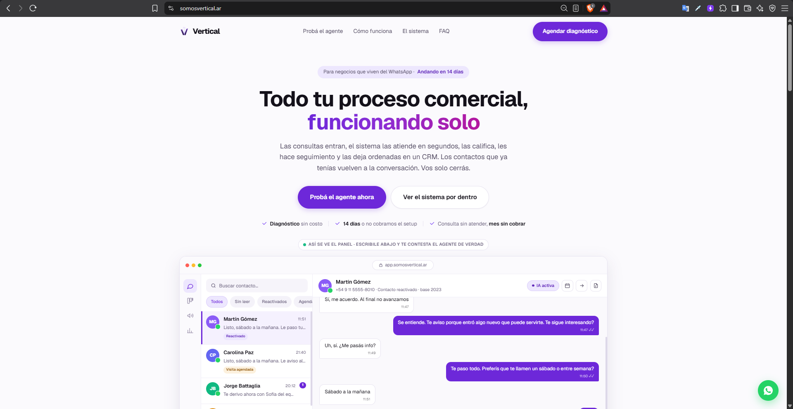

Mi propia plataforma: agentes conversacionales con IA y CRM para inmobiliarias, sobre la API oficial de WhatsApp. Califica leads, hace seguimiento y reactiva contactos las 24 horas. Proveedor de tecnología verificado por Meta.
Cliente
Producto propio
País
Argentina
Rol
Fundador · producto, arquitectura y operación
Estado
Activo, con clientes
Una inmobiliaria recibe consultas a toda hora y responde cuando puede. El contacto que no recibe respuesta en minutos se enfría, y después nadie tiene tiempo de reactivarlo.
proveedor de tecnología verificado
atención






